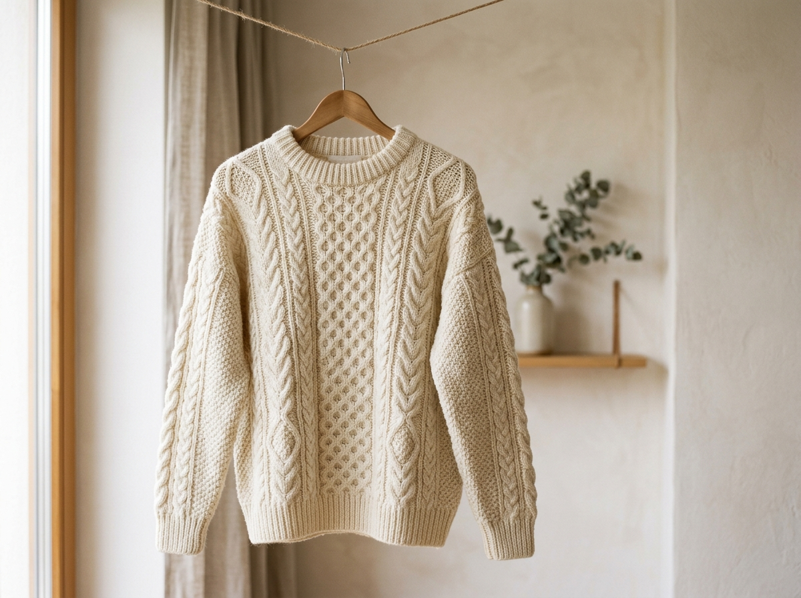
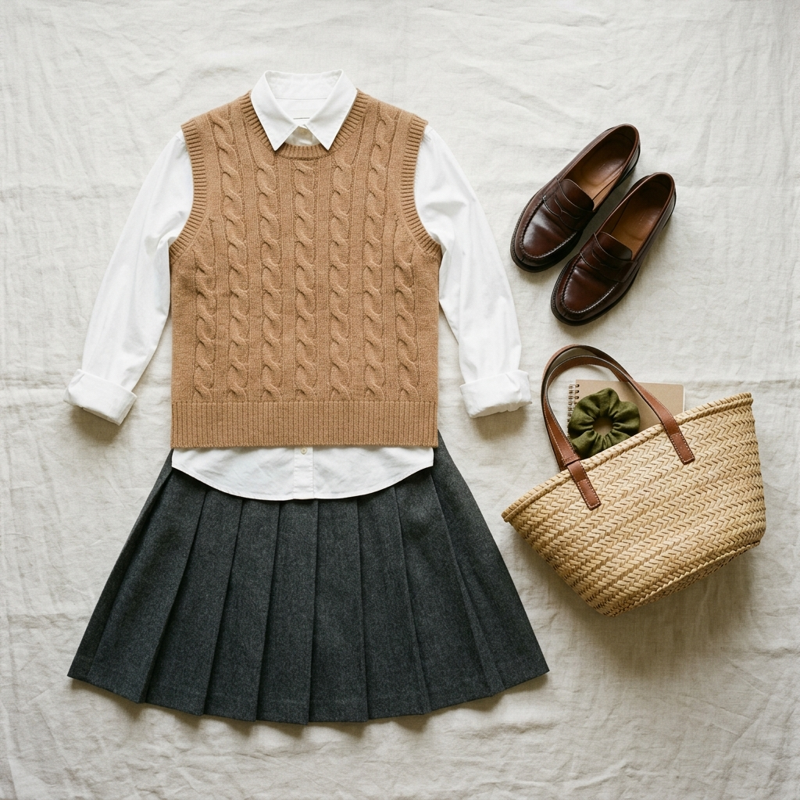
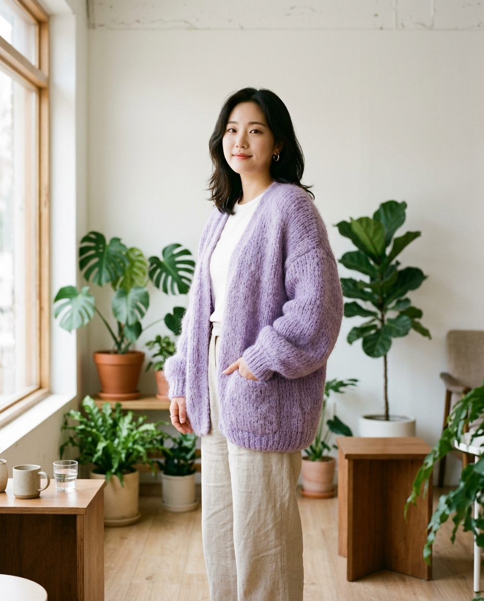
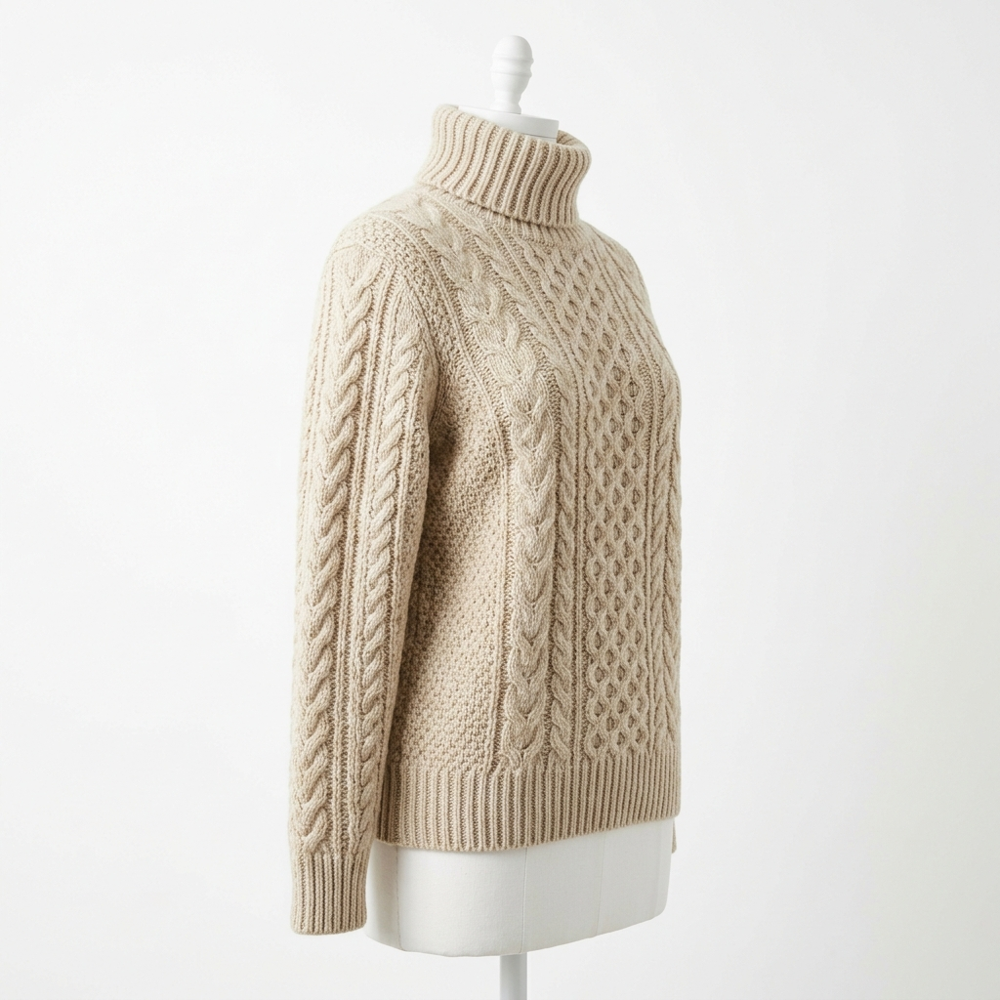
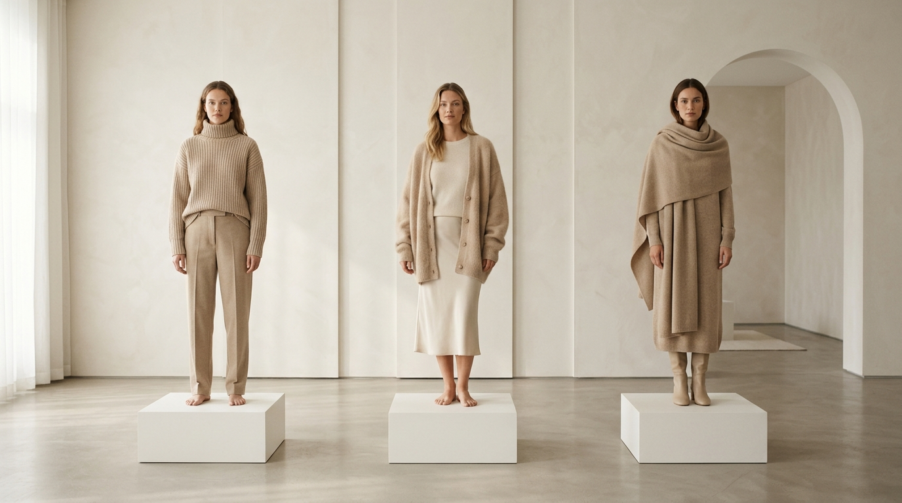
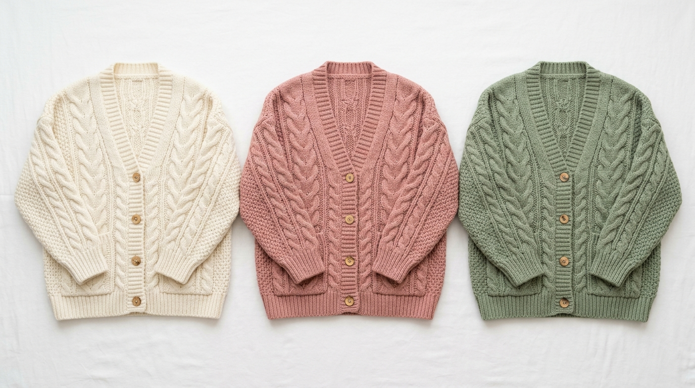
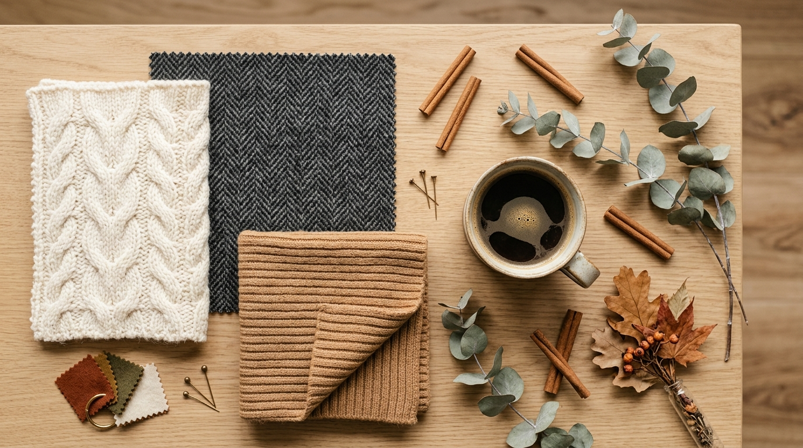

Overview
니트 프로그래밍, CAD, 패턴 개발 등 이미 다양한 디지털 도구를 활용하고 있는 여러분. AI는 여기서 한 걸음 더 나아가, 코딩 없이도 나만의 도구를 만들고 프로페셔널한 비주얼을 제작할 수 있게 합니다.
| 기존 방식 | AI 활용 |
|---|---|
| 엑셀로 원사/원단 재고 관리 | 바이브코딩으로 전용 재고 관리 앱 직접 제작 |
| 종이에 컬렉션 무드보드 | 인터랙티브 디지털 무드보드 앱 |
| 수작업 제품 원가 계산 | 자동 원가 계산기 앱 |
| 니트 패턴 시안을 손으로 그림 | AI로 패턴 수백 개를 빠르게 탐색 |
| 룩북 촬영에 모델/스튜디오 필요 | AI로 착장 이미지 시안을 즉시 생성 |
| 포트폴리오를 PDF로 공유 | 웹 포트폴리오 사이트 직접 생성 |
Courses
바이브코딩과 AI 이미지, 두 영역을 함께 익혀 패션 디자인의 기획부터 제작, 마케팅까지 AI를 활용하세요.
Google AI Studio로 나만의 패션 도구 만들기
니트 & 패션 특화 이미지 생성 초중급
Curriculum
코드를 "작성"하는 것이 아니라 원하는 결과를 "설명"하는 것. AI Studio의 Build 모드에서 한국어로 앱을 만듭니다.
먼저 Showcase에서 다른 사람들이 만든 예시 앱을 실행해보세요. "이런 것도 만들 수 있구나!"를 직접 체험하는 것이 가장 좋은 출발점입니다.
4개의 실습을 통해 실제 패션 현장에서 사용할 수 있는 앱을 직접 제작합니다.
니트 조직, 원단, 부자재를 카드 형태로 정리하고 검색할 수 있는 레퍼런스 앱
컬렉션 기획 시 컬러를 조합하고 무드보드를 구성하는 앱
소재비, 부자재비, 인건비를 입력하면 자동으로 원가와 판매가를 계산
졸업 작품이나 개인 작업물을 웹으로 공개할 수 있는 포트폴리오 사이트
System Instructions로 일관된 스타일 유지, 체크포인트로 안전하게 작업, GitHub/Cloud Run으로 실제 배포까지.
T2I(텍스트->이미지)와 I2I(이미지->이미지)의 핵심 원리를 배우고, 4블록 프롬프트 구조를 익힙니다.

행거 디스플레이, 자연광, 얕은 피사계 심도
T2I / 히어로 컷
니트 베스트 + 셔츠 + 스커트, 오버헤드 앵글
T2I / 플랫레이 1:1메리노울 케이블 조직, 매크로 스튜디오 조명
T2I / 디테일 컷아란 니트 원피스, 스톡홀름 겨울 거리, 85mm
SCEST / 룩북 4:5인스타 피드, 릴스, 웹 히어로 배너, 상세페이지 등 채널별 비율과 스타일에 맞는 이미지를 제작합니다.
| 채널/용도 | 비율 | 패션 활용 |
|---|---|---|
| 인스타 피드 | 1:1, 4:5 | 착장 룩북, 플랫레이 |
| 릴스/쇼츠 | 9:16 | OOTD, 스타일링 |
| 웹 히어로 배너 | 16:9, 21:9 | 브랜드 메인 비주얼 |
| 커머스 상세페이지 | 1:1, 4:3 | 제품 사진, 디테일 컷 |
| 포트폴리오 | 원본 비율, 4K | 졸업 전시 패널 |

모헤어 카디건, 카페 자연광, 3/4 바디샷
4:5 / 인스타 피드
터틀넥 스웨터, 드레스폼, 스튜디오 조명
1:1 / 커머스
니트웨어 컬렉션 라인업, 스칸디나비안 미니멀
16:9 / 웹 배너복잡한 이미지를 위한 구조화된 프롬프팅, 브랜드 일관성 유지, 오류 대응 기법을 배웁니다.
트위드 블레이저 + 실크 스커트, 갤러리, 50mm
SCEST / 4:5
동일 카디건 3색 (크림/더스티로즈/세이지)
일관성 유지 / 16:9
F/W 소재 스와치 + 자연 오브제, 어시 톤
기획 단계 / 16:9기획(무드보드) -> 디자인(패턴 시안) -> 프레젠테이션(컬렉션 시트)까지, 그리고 브랜드 비주얼 아이덴티티 구축.
AI 이미지 생성 기술은 이제 영상으로 확장되고 있습니다. 짧은 패션 영상을 텍스트나 이미지 한 장으로 만들 수 있는 시대입니다.
| 도구 | 최신 버전 | 특징 | 패션 활용 |
|---|---|---|---|
| Google Veo | Veo 3.1 | 4K 출력, 네이티브 오디오 생성, Flow 모드 카메라 제어, Gemini/AI Studio 통합 | 이미지 생성 후 바로 영상 전환, 원단 소리까지 포함된 ASMR 감성 클립 |
| Kling | Kling 3.0 | 최대 1080p, 모션 브러시로 부분 움직임 지정, I2V 강점, 무료 크레딧 | 원단 드레이프/바람 흔들림 등 부분 움직임 시각화에 최적 |
| PixVerse | PixVerse V5.6 | 고품질 4K 영상, 매직 브러시(부분 편집), T2V/I2V/캐릭터 일관성, 무료 체험 | 룩북 이미지에서 워킹 영상 변환, 캐릭터 고정 시리즈 |
| Seedance | Seedance 2.0 | ByteDance 최신 모델, 자연스러운 인체 동작, 댄스/모션 제어, 고품질 피직스 | 모델 워킹/포즈 전환, 패션쇼 시뮬레이션, 자연스러운 의류 움직임 |
AI 영상은 아직 "완성품"보다는 "초안/소스" 용도로 활용하세요. AI로 빠르게 무드 영상을 만들고, 후처리(편집/BGM/자막)로 완성도를 높이는 하이브리드 방식이 현재 가장 효과적입니다. 특히 원단의 드레이프, 바람에 흔들리는 니트 소재 등 "소재감을 보여주는 짧은 클립"에서 AI 영상이 가장 강점을 보입니다.
Do: 구체적으로 ("카드 형태", "3개 탭"), 사용자 명시, 한국어 UI 요청, 한 번에 하나씩 수정
Don't: 한 번에 너무 많은 기능, 모호한 표현 ("예쁘게 만들어줘"), 같은 오류 반복 요청
| 한글 | 영문 | 프롬프트 키워드 |
|---|---|---|
| 평편 | Jersey / Stockinette | smooth jersey knit surface |
| 골지편 | Rib Knit | 2x2 rib knit texture |
| 펄편 | Garter Stitch | garter stitch bumpy texture |
| 케이블 | Cable Knit | twisted cable knit pattern |
| 아란 | Aran | complex Aran cable combination |
| 자카드 | Jacquard / Fair Isle | Fair Isle jacquard color pattern |
| 인타샤 | Intarsia | intarsia color block motif |
| 시드 스티치 | Seed Stitch | seed stitch dotted texture |
| 와플 | Waffle Knit | waffle knit grid texture |
| 메쉬 | Mesh / Lace Knit | open mesh lace knit |
| 무봉제 | Whole Garment | seamless knit construction |
| 한글 | 영문 | 프롬프트 키워드 |
|---|---|---|
| 울 트위드 | Wool Tweed | herringbone tweed woven texture |
| 캐시미어 | Cashmere | soft cashmere luxurious drape |
| 실크 샤르므즈 | Silk Charmeuse | silk charmeuse subtle sheen |
| 코튼 포플린 | Cotton Poplin | crisp cotton poplin clean finish |
| 린넨 | Linen | natural linen texture slightly wrinkled |
| 데님 | Denim | indigo denim twill weave |
| 벨벳 | Velvet | plush velvet rich depth |
| 모헤어 | Mohair | fuzzy mohair fiber halo |
| 알파카 | Alpaca | alpaca soft matte surface |
| 오류 유형 | 원인 | 대응 |
|---|---|---|
| 니트 조직 비현실적 | AI가 실제 편직 구조를 모름 | 구체적 조직명 명시, 참조 이미지 첨부 |
| 원단 질감 어색 | 드레이프/광택 과장 | "natural fabric fall", "subtle sheen" |
| 손/손가락 왜곡 | 착장 시 손 묘사 과다 | 손을 소품 뒤로, 샷 거리 후퇴 |
| 색상 불일치 | 모니터/렌더 차이 | HEX 코드 명시, "true-to-color" |
| 텍스트 깨짐 | AI 한글 렌더링 한계 | 로고는 후처리, "no text" 명시 |
| 봉제선 비현실적 | 니트 늘어짐 미반영 | "relaxed drape", "natural fold" |
소재 질감 -> 실루엣/핏 -> 조명 -> 제약문
Practice
직접 만들어보며 배우는 것이 가장 빠릅니다. 각 트랙의 핵심 실습을 확인하세요.
니트 조직, 원단, 부자재를 카드 형태로 정리. 검색과 카테고리 필터 기능 포함.
컬러 피커로 팔레트 구성, 키워드 무드보드, 시즌 트렌드 컬러 참고.
소재비/부자재/인건비 입력으로 자동 원가 계산, 마진율별 판매가 산출.
메인/About/Works 갤러리/Contact 구성의 반응형 웹 포트폴리오.
4블록 구조로 T2I 초안 3안 생성, 베스트 1안 선택.
인스타 4:5 + 상세페이지 1:1 + 배너 16:9. 동일 아이템, 동일 톤.
무드보드 + 히어로 + 디테일 2장 + 라이프스타일 + 컬러 배리에이션 = 6컷.
브랜드 고정값 시트 작성 후 앵커 1장 + 변형 2장의 캠페인 시리즈.
게이지 입력 -> 사이즈별 필요 코수 계산
종류/색상/잔량 관리 + 부족 알림
작업 시간 기록 + 프로젝트별 통계
니트/직물/봉제/패턴 한영 검색
키워드/컬러/실루엣 시즌별 정리
졸업 전시나 플리마켓 소개 원페이지
커스텀 주문 접수/사이즈/진행 트래킹
시즌 컬렉션 이미지를 스와이프로 탐색
아이템별 치수표 관리 + 비교
아이템별 봉제 순서 + 품질 관리
Preparation
원활한 실습을 위해 미리 준비해주세요.